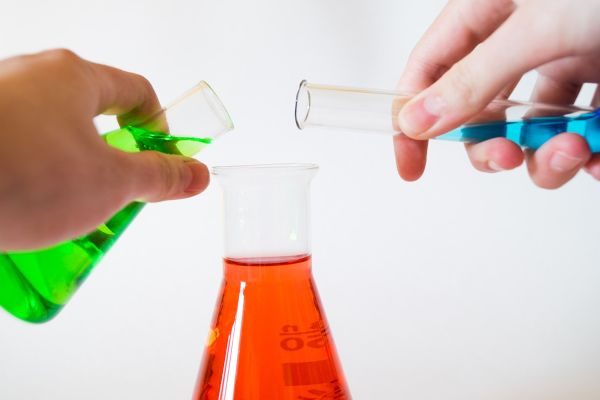

12 Physical Properties of Solutions

1. Some General Concepts and Rules
A solution is a homogeneous mixture composed of two or more substances. There are six types of solutions. (Table 11.1 in OpenStax textbook) A solute is the minor component in a solution, dissolved in the solvent.
A solvent is a substance that dissolves a solute (a chemically different liquid, solid or gas), resulting in a solution.
A saturated solution contains the maximum amount of a solute that will dissolve in a given solvent at a specific temperature.
An unsaturated solution contains less solute than the solvent has the capacity to dissolve at a specific temperature.
A supersaturated solution contains more solute than is present in a saturated solution at a specific temperature. Supersaturation is achieved by dissolving a solute in one set of conditions, then transferring it to other conditions without triggering any release of the solute. Supersaturated solutions are extremely unstable, but often require a triggering event to begin returning to a stable state via the solute coming out of solution.
Molecular view of solution formation The formation of a solution involves the breaking of solvent-solvent interaction; the breaking of solute-solute interaction; and the formation of solvent-solute interaction.
exothermic If the solute-solvent attraction is stronger than the solvent-solvent attraction and solute-solute attraction, the solution process is favorable; that is, it is exothermic (\(\Delta H_{soln} < 0\)).
endothermic If the solute-solvent interaction is weaker than the solvent-solvent and solute-solute interactions, the solution process is endothermic (\(\Delta H_{soln} > 0\)). Some endothermic processes still can happen because the formation of solution increases disorder.
When the strengths of the intermolecular forces of attraction between solute and solvent species in a solution are no different than those present in the separated components, the solution is formed with no accompanying energy change. Such a solution is called an ideal solution. A mixture of ideal gases (or gases such as helium and argon, which closely approach ideal behavior) is an example of an ideal solution, since the entities comprising these gases experience no significant intermolecular attractions.
Solubility is a measure of the amount of a solute that will dissolve in a given amount of solvent at a specific temperature.
Miscible: When two liquids are completely soluble in each other in all proportions, as in this case, they are said to be miscible. Example, methanol & water.
Solvation is the process in which an ion or a molecule is surrounded by solvent molecules arranged in a specific manner. When the solvent is water, the process is called hydration.)
Like dissolves like: Two substances with similar intermolecular forces are likely to be soluble in each other.
- Non-polar molecules are soluble in non-polar solvents
- Polar molecules are soluble in polar solvents
- Ionic compounds are more soluble in polar solvents
Temperature effect on the solubility of solids With increasing temperature, some solid soludes have larger solubility, some lower. There is no clear correlation between the sign of \(\Delta H_{soln}\) and the variation of solubility with temperature.
Temperature effect on the solubility of gases Higher temperature always results in lower solubility.
Pressure effect on the solubility of solids and liquids No influence.
Pressure effect on the solubility of gases Henry’s Law The solubility of a gas in a liquid is proportional to the pressure of the gas over the solution assuming no chemical reaction occurs for solute and solvent. If the solute reacts with the solvent, such as \(\ce{CO2}\) or \(\ce{NH3}\) in water, Henry’s Law does not apply.
Requirements
- Remember the concepts and the rules.
- Predict the relative solubility of different solutes in a given solvent.
2. Concentration Units
Mole Fraction (\(X\))
\[\begin{align*} X_\text{A}=\frac{\text{moles of A}}{\text{sum of moles of all species}} \end{align*}\]
Percent by Mass
\[\begin{align*} \text{percent by mass}=\frac{\text{mass of solute}}{\text{mass of solution}}\times 100\% \end{align*}\]
Molarity (M = mol/L)
\[\begin{align*} M =\frac{\text{moles of solute}}{\text{liters of solution}} \end{align*}\]
Molality (m =mol/kg)
\[\begin{align*} m=\frac{\text{moles of solute}}{\text{mass of solvent (kg)}} \end{align*}\]
Given the molar mass of the solute and the density of the solution. Percent by mass, molarity and molality can be calculated from one another.
\[\begin{align*} \text{moles of solute (mol)}=\frac{\text{mass of solute (g)}}{\text{molar mass of solute (g/mol)}} \end{align*}\]
\[\begin{align*} \text{mass of solution (g)} = \text{volume of solution (mL)}\times\text{density of solutions (g/mL)} \end{align*}\]
Example: What are the mole fraction and molality of a solution that contains 0.850 g of ammonia, \(\ce{NH3}\), dissolved in 125 g of water?
Answer: Need to calculate the moles of \(\ce{NH3}\) and the moles of water first. Note, the mass of water is in g, which needs to be converted to kg to calculate the molality.
\[\begin{align*} \text{Moles of }\ce{NH3} & =0.850\text{ g }\ce{NH3}\times\frac{1\text{ mol }\ce{NH3}}{17.0\text{ g }\ce{NH3}}\\ & = 0.0500\text{ mol }\ce{NH3}\\ \text{Moles of }\ce{H2O} & =125\text{ g }\ce{H2O}\times\frac{1\text{ mol }\ce{H2O}}{18.0\text{ g }\ce{H2O}}\\ & = 6.94\text{ mol }\ce{H2O}\\ X_{\ce{NH3}} & =\frac{0.0500\text{ mol}}{0.0500\text{ mol}+6.94\text{ mol}}\\ & =0.00715\text{ or }7.15\times10^{-3}\\ m & =\frac{0.0500\text{ mol}}{0.125\text{ kg}}\\ & =0.400\text{ mol/kg} \end{align*}\]
Example: The mole fraction of iodine, \(\ce{I2}\), dissolved in dichloromethane, \(\ce{CH2Cl2}\), is 0.115. What is the molality, \(m\), of iodine in this solution?
Answer: Assume you have a solution with the moles of \(\ce{I2}\) plus that of \(\ce{CH2Cl2}\) is 1 mol. Thus, in this solution you have 0.115 mol of \(\ce{I2}\) and 0.885 mol of \(\ce{CH2Cl2}\).
\[\begin{align*} \text{Mass of }\ce{CH2Cl2} & =0.885\text{ mol }\ce{CH2Cl2}\times\frac{84.9\text{ g }\ce{CH2Cl2}}{1\text{ mol }\ce{CH2Cl2}}\\ & =75.1\text{ g }\ce{CH2Cl2}\\ & =0.0751\text{ kg }\ce{CH2Cl2}\\ m= & \frac{0.115\text{ mol}}{0.0751\text{ kg}}\\ & =1.53\text{ mol/kg} \end{align*}\]
Example: Nitric acid, \(\ce{HNO3}\)(aq), is commercially available as a 33.7 m aqueous solution (density = 1.35 g/mL). What is the molarity of this solution?
Answer: Assume you have a solution containing 33.7 mol \(\ce{HNO3}\), which means you have 1 kg water in this solution. The density 1.35 g/ml = 1.35 kg/L.
\[\begin{align*} \text{Mass of }\ce{HNO3} & =33.7\text{ mol }\ce{HNO3}\times\frac{63.0\text{ g }\ce{HNO3}}{1\text{ mol }\ce{HNO3}}\\ & =2.12\times10^3\text{ g }\ce{HNO3}\\ & =2.12\text{ kg }\ce{HNO3}\\ \text{Volume of the solution} & =\frac{\text{Mass of the solution}}{\text{Density of the solution}}\\ & =\frac{2.12\text{ kg }\ce{HNO3}+1\text{ kg }\ce{H2O}}{1.35\text{ kg/L}}\\ & =2.31\text{ L}\\ M & = \frac{33.7\text{ mol }\ce{HNO3}}{2.31\text{ L solution}}\\ & =14.6\text{ mol/L} \end{align*}\]
Requirements
- Know how to calculate concentrations; and know how to convert the concentration from on unit to another.
3. Colligative Properties
Colligative properties are properties that depend only on the number of solute particles in solution and not on the nature of the solute particles.
Raoult’s law: The partial pressure exerted by any component of an ideal solution is equal to the vapor pressure of the pure component multiplied by its mole fraction in the solution.
Vapor-Pressure Lowering The vapor-pressure of the solvent decreases with the increasing mole fraction of the solute.
\[\begin{align*} P_1 = X_1P_1^0 \end{align*}\]
where \(X_1\) is the mole fraction of the solvent; \(P_1^0\) is the vapor-pressure of the pure solvent; \(P_1\) is the vapor-pressure of the solvent over a solution.
Boiling-Point Elevation and Freezing-Point Depression The boiling-point increases proportionally with the molality; The freezing-point decreases proportionally with the molality. The \(K_b\) and \(K_f\) values vary with the solvents. To do a calculation, the \(K_b\) and \(K_f\) values must be given. You can find those values for different solvents in the textbook and do not need to memorize them.
\[\begin{align*} \Delta T_b & = K_bm \\ \Delta T_f & = K_fm \end{align*}\]
Osmotic Pressure
Semipermeable membrane allows solvent molecules to pass through but blocks the passage of solute molecules.
Osmosis is the net movement of solvent molecules through a semipermeable membrane from a pure solvent or from a dilute solution to a more concentrated solution.
Osmotic pressure (\(\pi\)) of a solution is the pressure required to stop osmosis. Osmotic pressure is proportional to molarity.
\[\begin{align*} \pi = MRT \end{align*}\]
Colligative Properties of Electrolyte Solutions
Properties of electrolyte solutions have been covered in CHEM107. To remind yourself, you can read Ch11.2 in OpenStax textbook
Electrolytes dissociate into ions in solution, and so one unit of an electrolyte compound separates into two or more particles when it dissolves. The colligitive properties depends on the total number of solute particles rather than the original unit of electrolyte compound.
Define
\[\begin{align*} i = \frac{\text{actual number of particles in soln after dissociation}}{\text{number of formula units initially dissolved in soln}} \end{align*}\]
Then
\[\begin{align*} \Delta T_b & = iK_bm \\ \Delta T_f & = iK_fm \\ \pi & = iMRT \end{align*}\]
Example: A solution contains 5.00 g of urea, \(\ce{CO(NH2)2}\) (a nonvolatile solute) and 0.100 kg of water. If the vapor pressure of pure water at 25 °C is 23.7 torr, what is the vapor pressure of the solution assuming ideal behavior?
Answer:
\[\begin{align*} \text{Moles of urea} & =5.00\text{ g urea}\times\frac{1\text{ mol urea}}{60.0\text{ g urea}}\\ & =0.0833\text{ mol urea}\\ \text{Moles of water} & =100\text{ g water}\times\frac{1\text{ mol water}}{18.0\text{ g water}}\\ & =5.56\text{ mol water}\\ X_{\ce{H2O}} & =\frac{5.56\text{ mol water}}{5.56\text{ mol water}+0.0833\text{ mol urea}} \\ & = 0.986 \\ P & =X_{\ce{H2O}}\times P^0\\ & =0.986\times23.7\text{ torr}\\ & =23.4\text{ torr} \end{align*}\]
Example: What is the boiling point of a solution of 1.0 g of glycerin, \(\ce{C3H5(OH)3}\), in 47.8 g of water? Assume an ideal solution. (Boiling temperature of water is 100 °C, \(K_b\)=0.512 °C/m)
Answer:
First, calculate the molality. Then, calculate the change of boiling point.
\[\begin{align*} \text{Moles of glycerin} & =1.0\text{ g glycerin}\times\frac{1\text{ mol glycerin}}{92\text{g glycerin}}\\ & =0.011\text{ mol glycerin} \\ m & = \frac{0.011\text{ mol glycerin}}{0.0478\text{ kg water}}\\ & = 0.23\text{ m}\\ \Delta T_b & = K_b\times m \\ & = 0.512\text{ }^\circ\text{C/m}\times 0.23\text{ m} \\ & = 0.12\text{ }^\circ\text{C} \\ \end{align*}\]
Since the presence of solute would cause the boiling temperature to increase from 100 °C by 0.12 °C. The new boiling temperature is 100.12 °C.
Example: Assuming ideal solution behavior, what is the osmotic pressure (atm) a solution with a volume of 0.750 L that contains 5.0 g of methanol, \(\ce{CH3OH}\), in water at 37 °C?
Answer:
First, calculate the molarity. Then, calculate the osmotic pressure.
\[\begin{align*} \text{Moles of methanol} & =5.0\text{ g methanol}\times\frac{1\text{ mol methanol}}{32\text{ g methanol}}\\ & = 0.16\text{ mol methanol}\\ M & =\frac{0.16\text{ mol methanol}}{0.750\text{ L solution}}\\ & =0.21\text{ M} \\ \pi & =MRT\\ & =0.21\text{ M}\times 0.0821\text{ L atm/mol K} \times (37+273)\text{ K} \\ & = 5.3\text{ atm} \end{align*}\]
Requirements
- Understand what is colligative property.
- Given the concentration of a solution, use the equations provided to calculate the vapor-pressure change, boiling and freezing point change and osmotic pressure.
- Calculate the molar mass based on osmotic pressure.
- Understand the difference between non-electrolytes and electrolytes.
Practice Questions
- When \(\ce{KNO3}\) is dissolved in water, the resulting solution is significantly colder than the water was originally.
- Is the dissolution of \(\ce{KNO3}\) an endothermic or an exothermic process?
- What conclusions can you draw about the intermolecular attractions involved in the process?
- Is the resulting solution an ideal solution?
- Predict whether each of the following substances would be more soluble in water (polar solvent) or in a hydrocarbon such as heptane (\(\ce{C7H16}\), nonpolar solvent):
- vegetable oil (nonpolar)
- isopropyl alcohol (polar)
- potassium bromide (ionic)
Heat is released when some solutions form; heat is absorbed when other solutions form. Provide a molecular explanation for the difference between these two types of spontaneous processes.
Assume that the solubility of \(\ce{CO2}\) gas in water at 25 \(^\circ\text{C}\) and 1.00 atm is 0.030 M. What is its solubility under pressure of 0.50 atm at 25 \(^\circ\text{C}\)? Explain your choice.
- 0.060 M
- 0.015 M
- 0.10 M
- 1.00 M
- The solubility cannot be determined.
How did the concentration of dissolved \(\ce{CO2}\) in the beverage change when the bottle was opened? What caused this change?
Which of the following statements about temperature effect on gas solubility in liquid is correct?
- Temperature increases, solubility of some gases in liquid will increase and some will decrease.
- Temperature increases, solubility of all gases in liquid will increase.
- Temperature increases, solubility of all gases in liquid will decrease.
- Temperature effect on gas solubility in liquid depends on exothermic or endothermic process of making the solution.
- Temperature has no effect on gas solubility.
- What is the expected electrical conductivity of the following solutions in water?
- NaOH
- HCl
- \(\ce{C6H12O6}\) (glucose)
- \(\ce{CH3CH2OH}\)
What are the mole fractions of \(\ce{H3PO4}\) and water in a solution of 14.5 g of \(\ce{H3PO4}\) in 125 g of water? What is the molality? Knowing this solution has a density of 1.21 g/mL, what is the molarity?
What are the mole fractions of \(\ce{HNO3}\) and water in a concentrated solution of nitric acid (68.0% \(\ce{HNO3}\) by mass)?
A solution contains 5.00 g of urea, \(\ce{CO(NH2)2}\), a nonvolatile compound, dissolved in 0.100 kg of water. If the vapor pressure of pure water at 25 °C is 23.7 torr, what is the vapor pressure of the solution (assuming ideal solution behavior)?
Assuming ideal solution behavior, what is osmotic pressure of a solution of bovine insulin (molar mass, 5700 g/mol) at 18 °C if 100.0 mL of the solution contains 0.103 g of the insulin?
Assuming ideal solution behavior, what is the boiling point of a solution of 9.04 g of \(\ce{I2}\) in 75.5 g of benzene, assuming the \(\ce{I2}\) is nonvolatile? (The boiling point of benzene is 80.1 °C and the \(K_b\) value for benzene is 2.53 °C/m.)
You have two water solutions with the same molality 0.02 mol/kg. The solute of one solution is table sugar (a nonvolatile molecular compound) and the other is table salt (i.e., NaCl). Which solution do you expect to have a higher boiling point? Why?
Copyright
Copyright(C) 2022 Yu Wang

This work is licensed under a Creative Commons Attribution 4.0 International License.